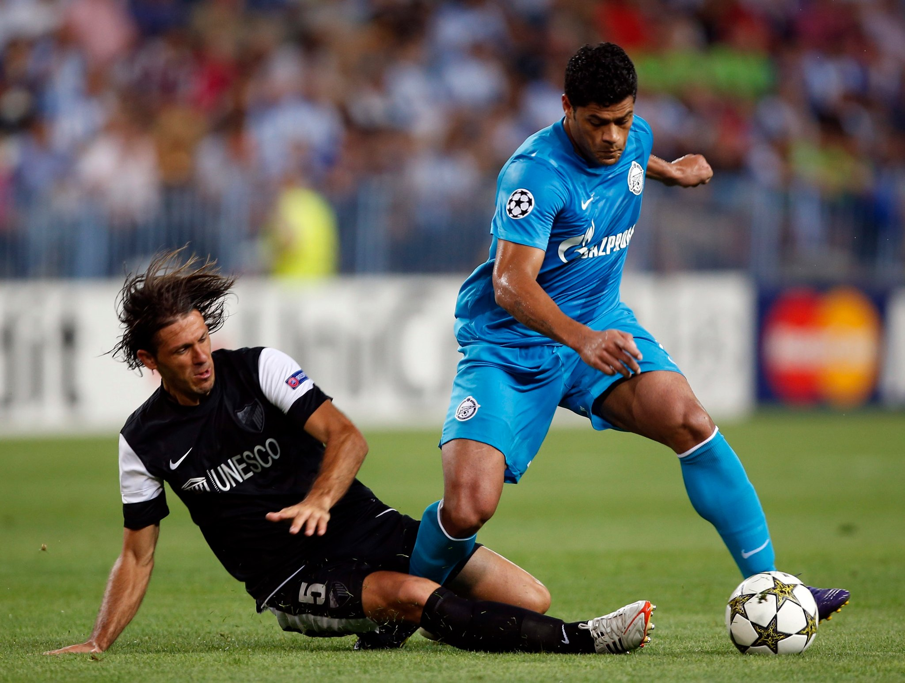
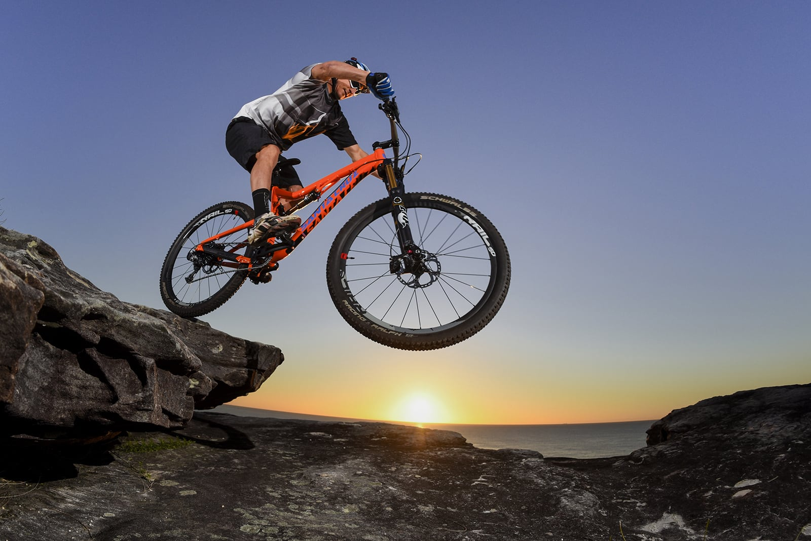
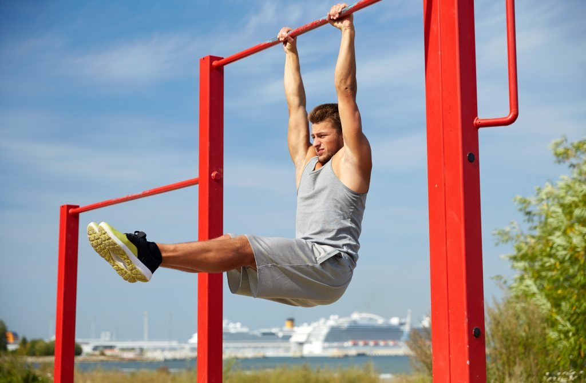

Exercise
Soccer
I've played competitive soccer for over 12 years, and it has shaped my life as much as anything else that I have done.
Biking
Street riding. Mountain riding. City riding. I do it all, and I'll never stop loving it.
Hiking

Thanks to my parents taking my brothers and I on hiking trips when we were younger, I have found hiking to be one of my favorite activities to do. Recently, I have taken it to the next level by doing multi-day hikes (backpacking).
Calisthenics
Calisthenics is probably the fastest way to gain strength without going to a gym. Push-ups, sit-ups, pull-ups, squats, etc. and all of the variations are more than enough to build muscle.